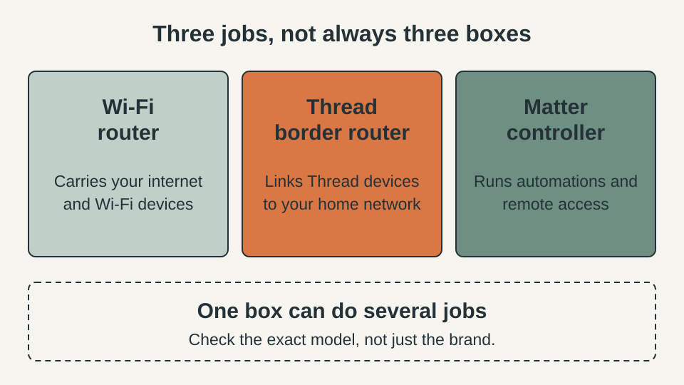
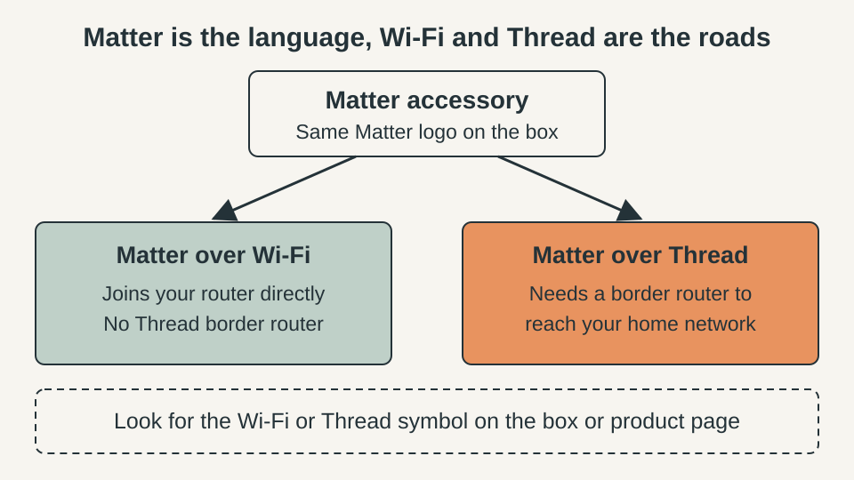
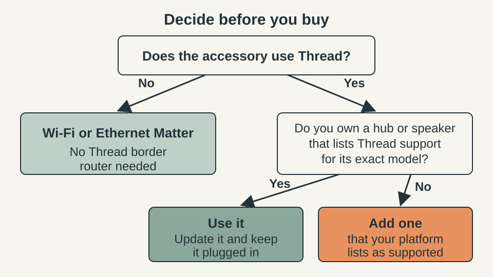
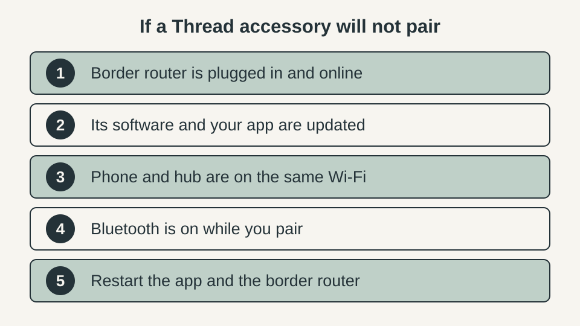

SMART HOME · MATTER & THREAD
Do You Need a Thread Border Router? Check What You Already Own Before Buying

Your phone says “Thread Border Router Required,” or a Matter accessory lists Thread, and you wonder whether to buy another hub. Often you do not need to buy anything yet. This guide shows how to check what the accessory uses, what each role does, and whether a speaker, display or TV box you own already covers it.
The quick answer
- A Thread border router is a job, not always a separate box. It connects Thread accessories to your home network, and many speakers, displays, TV boxes and routers already do it.
- You only need one if the accessory uses Thread. A Matter accessory that joins your router over Wi-Fi does not need Thread, though your platform may still ask for a compatible hub.
- Check the exact model and generation of what you own. Official lists are model-specific, and not every model in a product line is on them.
- A Thread-enabled iPhone can pair Thread accessories, but Apple points to a home hub or border router for automations, notifications and remote control.
- Buy only after the check. The decision path below takes about ten minutes and costs nothing.
Quick plan
| Time | About 10 minutes |
| Cost | Free |
| Best for | Anyone about to buy a Matter accessory, or seeing a Thread alert in their phone’s home app |
| Goal | Know whether you must buy a border router, or whether you already own one |
Step 1: Find out whether the accessory uses Wi-Fi or Thread
Matter is the shared language that lets accessories from different brands work with Apple, Google and Amazon. It travels over a network, and for most home accessories that network is Wi-Fi or Thread. Two accessories with the same Matter logo can therefore need different things at home.

Google tells shoppers to look for the connectivity symbols on the packaging or the product’s website, which show whether the accessory talks over Wi-Fi or Thread. Do the same. Check the box, the specifications on the product page and the setup leaflet. If the accessory only mentions Wi-Fi, you can stop here: it does not need a Thread border router. If it names Thread, go on to step 2.
Step 2: Separate the three jobs
- Wi-Fi router. Carries your internet and your Wi-Fi traffic. Everything ends up on this network.
- Matter controller. The hub function in your Apple, Google or Amazon setup. It manages accessories, runs automations and, when it stays on at home, lets you control things while you are away.
- Thread border router. Links the small Thread network formed by your Thread accessories to the Wi-Fi or Ethernet network, so the controller and your phone can reach them.
The border router is a function, and one physical box may combine roles. That is why “do I need a new box?” is often the wrong question. Google makes the same point on its own Matter page by splitting its hubs into a Wi-Fi-only group and a Wi-Fi-plus-Thread group, so a hub on the first list will not do a border router’s job.
Step 3: Check the exact model you already own
Find the model name on the device label, in its app’s device details or in your order history. Then compare it with the official list for your platform. The notes below are a snapshot checked on 11 November 2026. Lists change, so always confirm on the linked page.
- Apple. Apple’s page for the “Thread Border Router Required” alert names HomePod mini, HomePod (2nd generation), Apple TV 4K (2nd generation) and the Wi-Fi + Ethernet version of Apple TV 4K (3rd generation). That last detail matters: the Wi-Fi-only 3rd-generation box is not named in the list, so check which version you own.
- Google. Google’s Matter page lists Nest Hub (2nd gen), Nest Hub Max, Nest Wifi Pro and Google TV Streamer (4K) among the hubs that support Wi-Fi and Thread, and it also showed a newer Google Home Speaker (2026). Older speakers such as Nest Mini and Nest Audio sit in the Wi-Fi-only group.
- Amazon. Amazon’s developer page on Thread support lists the Echo and eero devices that have a border router built in, organised by Thread version and device generation. Match the generation of your device, not only the product name.
- Other makers. Some third-party hubs and mesh routers include a border router. Look for the words “Thread border router” on the product page rather than assuming.
If your device is not on the list for its own platform, treat it as not a border router until the maker says otherwise. A device that is on the list still needs to be powered on, online and updated before it does the job.
Step 4: Follow the decision path before you buy

- Does the accessory use Thread? If not, no Thread border router is needed.
- If it does, check whether a hub, speaker, display, TV box or router you own lists Thread support for its exact model.
- If one does, update it, keep it plugged in and set it up as your home hub, then pair the accessory.
- If none does, add one border router that your platform lists as supported, ideally one that doubles as your Matter controller.
On Apple, the iPhone is a special case. Apple says you can pair accessories to a Thread-enabled iPhone running iOS 18 or later, which covers the iPhone 15 Pro and newer models on its list. For automations, notifications and remote control, Apple tells you to set up a home hub or a compatible third-party border router. Check Apple’s page for the current iPhone models.
What not to buy yet
- A second hub just because the box says Matter. Matter over Wi-Fi does not need Thread.
- A Thread accessory before you know which platform you use. The border router you need depends on that platform.
- A border router that your platform does not list as supported. Check the platform’s notes first.
- A Thread border router to fix a Wi-Fi accessory that drops offline. That is a Wi-Fi problem, covered in our 20-minute fix order for smart plugs and bulbs.
If a Thread accessory will not pair

Apple’s guidance for an accessory that will not pair with an iPhone is to make sure the accessory is Thread-enabled and to turn Bluetooth on. Google’s help for Thread on Android says to check that the border router is on and connected to the same Wi-Fi network, then restart the Android device and the border router. Update the border router’s software and your home app before you start, and change one thing at a time so you know which step worked.
Quick win (5 minutes)
Write down the exact model of every speaker, display, TV box and router in your home that might act as a hub. Open the official list for your platform and mark which ones appear. That short list answers most “do I need one?” questions, and it stops you from buying a duplicate.
Common mistakes
- Assuming Matter means Thread. Many Matter accessories use Wi-Fi only.
- Assuming every hub from a brand is a border router. Product lines mix models.
- Ignoring the generation or version, such as the two 3rd-generation Apple TV 4K models.
- Unplugging or moving the border router into a closet, which cuts the accessories off from your network.
- Buying before checking the official list on the day you shop.
FAQ
What is the difference between a Matter controller and a Thread border router?
A Matter controller is the hub function in your Apple, Google or Amazon setup that manages your accessories and runs automations. A Thread border router is a separate job: it connects Thread accessories to your home network. One speaker, display, TV box or router can do both jobs, but a hub that works as a controller is not automatically a border router.
Does a Wi-Fi Matter accessory need a Thread border router?
No. Matter accessories that join your router over Wi-Fi do not use Thread. Your platform may still want a compatible hub for Matter, so check its own list, but you do not need Thread for those accessories.
Can my iPhone replace a border router?
Only partly. Apple says a Thread-enabled iPhone running iOS 18 or later can pair Thread accessories, and its Thread-enabled models start at the iPhone 15 Pro. For automations, notifications and remote control, Apple points to a Thread-enabled home hub or a compatible third-party border router. Check Apple’s page for the models it lists today.
Can I use a border router from a different brand?
It can work. Apple’s own alert guidance mentions compatible third-party border routers, and Google says an Android phone can join an existing Thread network. Before you buy, read your platform’s notes on third-party border routers so you know the router is supported.
Will a Thread border router fix my Wi-Fi plug that keeps going offline?
No. A Thread border router only helps accessories that use Thread. A Wi-Fi plug that drops off the network is a router, signal or band problem, which our guide on smart plugs and bulbs that keep going offline walks through.
How often should I recheck the lists?
Before every purchase. Platform lists change as makers add models and update software, so treat any list, including the snapshot in this guide, as a starting point and confirm on the official page.
Keep going
- Smart bulb or smart switch? How to choose for how Wi-Fi, hubs, Zigbee and Matter fit into a lighting setup.
- What happens to your smart home when the internet goes down to see which devices keep working locally.
- Smart plugs and bulbs that keep going offline if your trouble is Wi-Fi, not Thread.
- Smart home privacy check, because every hub you add is another always-on device on your network.
Sources and last checked
Platform pages were checked on 11 November 2026. Lists change, so confirm on the official page before you buy.
- Apple Support, “If you see a ‘Thread Border Router Required’ or ‘Needs Thread Network’ alert on your iPhone or iPad”: https://support.apple.com/102078
- Google Home Help, “Prepare your smart home for Matter”: https://support.google.com/googlehome/answer/12391458
- Google Android Help, “Connect Thread smart home devices with your Android device”: https://support.google.com/android/answer/16335330
- Amazon Developer, “Understand Smart Home Thread Support” (last updated May 2026): https://developer.amazon.com/docs/alexaplus/smarthome/thread-support